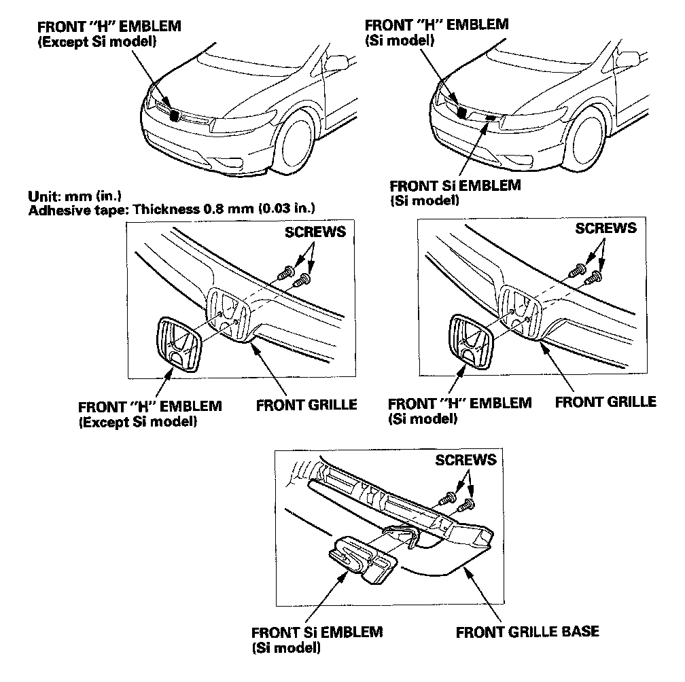
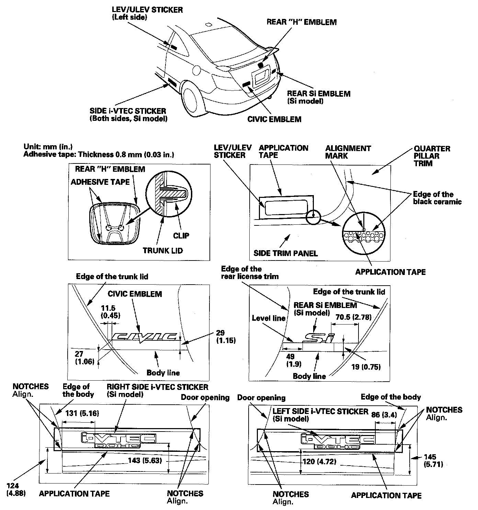
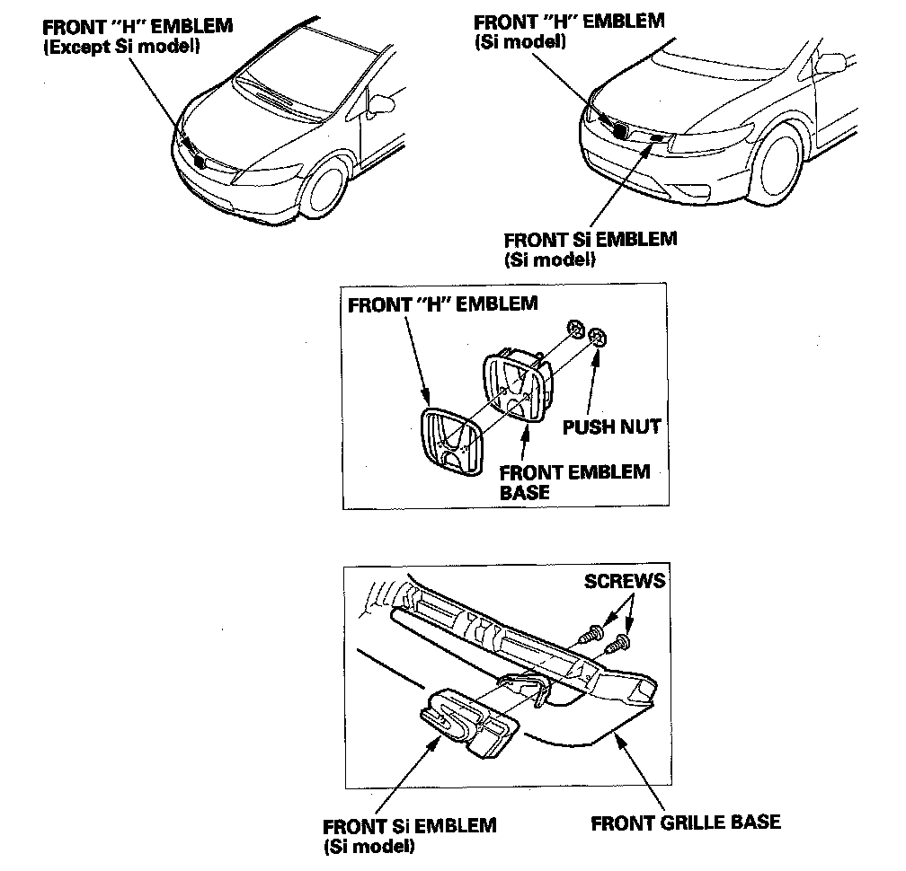
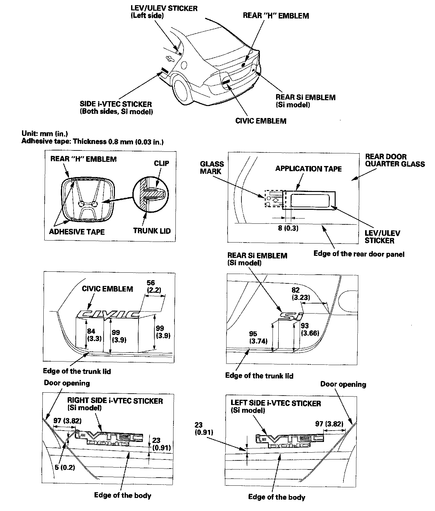

Body Emblem: Service and Repair
Emblem/Sticker ReplacementNOTE: When removing the emblems, take care not to scratch the body.
2-door
1. Except Si model: To remove the front "H" emblem, remove the front grille.
2. Si model: To remove the front "H" emblem, or the front Si emblem, remove the front grille.
3. Clean the body surface with a sponge dampened in alcohol. After cleaning, keep oil, grease, and water from getting on the surface.
4. Apply the emblem/sticker where shown:
- When installing the LEV sticker on the inside surface of the left quarter glass, align the sticker with the edge of the glass mark and black ceramic as shown, then press the sticker into place, and remove the application tape.
- When installing the side i-VTEC sticker on the body, align notches in the application tape with the edge of the body and door opening, then press the sticker into place, and remove the application tape.
5. Except Si model: After installing the front "H" emblem, reinstall the front grille.

Exterior Trim Emblem/Sticker Replacement:

6. Si model: After installing the front "H" emblem or the front Si emblem, reinstall the front grille.
NOTE: When removing the emblems, take care not to scratch the body.
4-door
1. Except Si model: To remove the front "H" emblem, remove the front grille.
2. Si model: To remove the front "H" emblem or the front Si emblem, remove the front grille.
3. Clean the body surface with a sponge dampened in alcohol. After cleaning, keep oil, grease, and water from getting on the surface.
4. Apply the emblem/sticker where shown:
- When installing the LEV sticker on the inside surface of the left quarter glass, align the sticker with the edge of the glass mark and black ceramic as shown, then press the sticker into place, and remove the application tape.
- When installing the side i-VTEC sticker on the body, align notches in the application tape with the edge of the body and door opening, then press the sticker into place, and remove the application tape.
5. Except Si model: After installing the front "H" emblem, reinstall the front grille.

Exterior Trim Emblem/Sticker Replacement:

6. Si model: After installing the front "H" emblem or the front Si emblem, reinstall the front grille.